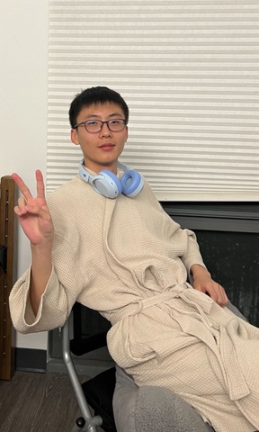

基本信息
请上传一张自己的照片，普通的生活照就可以！（只是为了面试的时候我们可以把你认出来）

查看原图
查看原图
通用问题部分
为什么想要加入CSSA？
作为一个选课较为轻松的大一新生，熟悉校园环境后我的daily routine基本固定，在这时出现的CSSA这个联系紧密融洽的群体让我觉得自己能从中认识优秀的朋友，走出舒适圈，更重要的是CSSA成员都是中国留学生，拥有相似的背景，能让我在安心的环境中从各项tasks获得成就感并收获前辈的经验
你心目中CSSA是个什么样的组织？
入学前对CSSA了解不多，本来以为是毕业校友组织的，听过宣讲才发现原来都是关系很近的在校生...但我一直认为CSSA作为官方双重认证的学生组织，排在第一位的职责是为康奈尔留学生及其家庭提供足够多的帮助与支持，既提供交流互动的平台，也随时欢迎中国留学生的求助，并在疫情等艰难时刻担当最坚强的后盾
加入CSSA之后，你最想在康奈尔校园内实现的事情是什么？
想做一个方便康奈尔留学生提问的提问箱（本人有时不敢在群里提问所以觉得把问题甩进线上匿名或一对一的提问箱里会轻松点），复杂一点就是讨论版的形式，毕竟提问箱CSSA内部自己回答可能会遇到课程专业之类因为没接触过所以无法回答的问题，但是讨论版又与微信群功能有所重叠并存在维护管理审核方面的麻烦所以只是想想
秘书处
如果让你选择未来一周的工作，你想做什么？
整理一份混乱的历年档案库
当别人第一次见到你时，他们会说“哇，你居然___！”（请填空）
完全符合Kevin这个名字给我的印象...但非常随和
某天深夜，一位新生在微信上非常焦急地询问：‘我的航班延误了了，接机联系不上怎么办？现在半夜一个人在机场好害怕...’
作为小助手值班的你，会如何回复？请写出具体回应（注意：你无法直接解决问题，但需要让TA感到安心）。
首先：请不要慌张！请不要慌张！请不要慌张！航班延误是很正常的，相信接机人员也会有丰富的经验来处理这类状况。机场人流量大，有意外状况大声呼救，周围的人一定会提供帮助，航站楼里的工作人员也能确保你的安全，这是他们的职责。你现在需要做的就是保持冷静，看好随身行李，给手机充上电来保证自己联系的畅通，跟父母同学讲明情况后再继续耐心等待，尝试联系接机。如果有让你觉得不适的人只需要从容地远离，请相信自己不会有事，每年康奈尔的留学生再周折也都能安全抵达校园。不用去考虑check in等等的事情，让自己适当放松，以后的事情有很多种方式去解决，我们也会提供帮助。如果接机仍旧联系不上，请记得我们CSSA和机场的工作人员一直都在，你可以随时找我沟通，祝你接下来前往伊萨卡的行程一切顺利
你希望从秘书处的伙伴们和这份工作中获得什么？（比如：深厚的友谊？一份完美的简历？超硬核的技能？还是单纯的快乐？）
与人联系的快乐，对校园生活小tips和学术发展方向的广泛了解，帮助他人和完成工作时的成就感获得
（可选）有人说“我们属于我们投入过心力的地方”。你希望自己在秘书处留下怎样的痕迹？
我不期望自己在秘书处做出什么革命性的改变，但我的确想给每个在秘书处共同工作过的同学留下好的回忆，帮助下一届同学快速上手并交接工作，让秘书处的工作按部就班进行，不掉链子、不拖后腿
第一志愿为什么选择这个部门？
1.跟现在秘书处的两位负责人聊天觉得没有什么压力，好像能快速熟悉秘书处的工作
2.从小学一年级开始当了12年的卫生委员，很喜欢干一些执行性质的工作，逐渐上手后能从贡献中获得足够多的成就感
3.类似2中提到的，我自认为不太擅长对创造性和社交能力要求高的工作，因此踏实做事但又不缺乏与人交往的秘书处很合适
财务部
第二志愿为什么选择这个部门？
虽然感觉自己对数字不够敏感，但是财务部同样给我与秘书处相似的感受，不用过度考虑他人的喜好，也不需要承担关键时刻活跃气氛的责任。我很愿意从零学起接触一个之前从未接触过的领域，从中探究自己的兴趣点和能力，而财务部刚好是这样一个可以旁观和参与其他部门工作，并做出重要贡献（毕竟是经济支持）的部门
是否接受部门调剂？
否